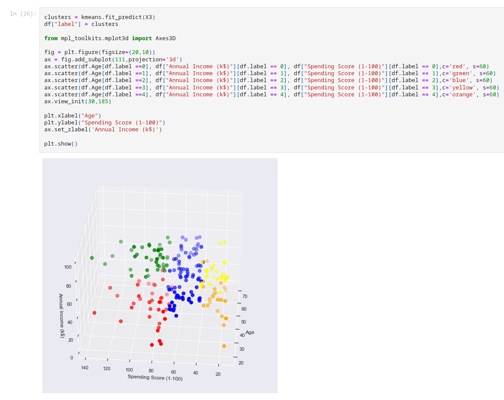
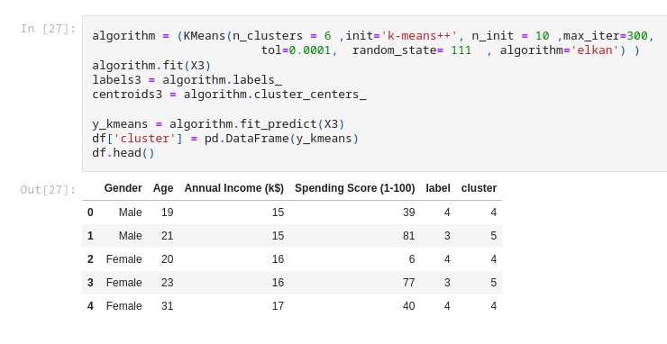

Problem Statement

Grouping customers into ideal number of clusters.
Develop a model to visualize data from mall customers and cluster them into ages and potential products purchased
Grouping customers into ideal number of clusters.
Develop a model to visualize data from mall customers and cluster them into ages and potential products purchased

Customer segmentation is the process of dividing customers into groups based on common characteristics so companies can market to each group effectively and appropriately. In business-to-business marketing, a company might segment customers according to a wide range of factors, including:
Customer segmentation is basically identifying key differentiators that divide customers into groups that can be targeted. The main goal of segmenting customers is to decide how to relate to customers in each segment to maximize the value of each customer to the business.

Earlier Customer segmentation was a challenging and time-consuming task. This is because for segmenting customers we need to perform hours of manual poring on different tables and querying the data in hopes of finding ways to group customers together. So to overcome this task we will use machine learning to segment customers.
So the following project helps user to segment customers using machine learning algorithms, so that it will be useful for businessmen in personalized marketing and provide their customers’ relevant offers and deals.

Unsupervised learning is a machine learning technique in which models are not supervised using training dataset. Instead, models itself find the hidden patterns and insights from the given data. It can be compared to learning which takes place in the human brain while learning new things. It can be defined as:
Unsupervised learning is a type of machine learning in which models are trained using unlabeled dataset and are allowed to act on that data without any supervision.
So our project works upon the principle of Unsupervised Learning beacuse It involves training of machine using information that is neither classified nor labelled and allowing the algorithm to act on that information without guidance.
.png)
The idea behind k-means clustering is very simple, it arranges the data into clusters that are very similar.

The project is made using the coding language Python.
The following libraries you are required to install in your system, they are:
Let us code the model of customer segmentation.
First we will import all important libraries in our juypter notebook
Now we will import the dataset and once check if the file is imported
So in the first data plot we can see that age group 20-40 perform the highest shopping among all the all the age groups.
In the 2nd plot we can see that the people who have their annual income between $50,000 and $70,000 perform more shopping.
In the 3rd plot we can see that the most people have the score 50.
Now let us compare the number of female and male customers.
We will use the countplot function of sns to represent the comparison
From this we can conclude that majority of customers is female.
Now let us create a violin plot of age, annual income , and spending score based on gender using the seaborn library.
The above violin plots represents the distribution of age, annual income and spending score based on gender
In the first violin plot we can see that female density is more that of male in the age group 30
In the second violin plot we can see that female density is more at $60,000 p.a. and male density is also around $60,000-$65,000
In the third violin plot, the density of both male and female density is around 50.
Before moving ahead lets describe our data
As we can see from the description that minimum age group is 18, maximum is 70 and so on we can derive conclusions from this which will help us to provide efficiency in the visualization
Let us now divide the age group into five categories to understand which age group has more density of customers.
In the program , we have divided the age into 5 categories.
On x-axis we will represent the category of age
On y-axis we will represent the number of customers in each category by using the length function.
Also for visualization of this data we will use bar plot
Let us now run the code:
From this bar graph we can easily understand that the age group 26-35 has maximum customers
For better understanding of data let us look into the relationship between annual income and spending score.
From this plot we can see that customers who have an annual income of $40,000 to $60,000 have a spending score of 60.
Moving ahead let us divide the annual income into 5 categories as we did earlier with the age category.
-->In the program, we have divided the annual income into five categories.
The x-axis represents the range of income.
The y-axis will represent the number of customers.
Now let us run the code:
From the bar graph we can see that most customers have annual income of $60,000-$90,000
Similarly we will do with the spending scores i.e. dividing it into 5 categories
We can see from the bar graph that maximum customers have a spending score of 41-60
In this way we have analysied the data thoroughly.
From here clustering process starts.
Now first we will find the optimum number of clusters that we need to create.
We will first cluster the data of age and spending score
First import the Kmeans and now we will draw a graph to find the optimum number of clusters for the 2 variables we considered for a range of 1-11 in X1
From the graph we can see that, it becomes little bit constant after 4.
So let the number of optimum clusters = 4
We can see that clusters here have been divided into 4 parts i.e. 0,1,2 and 3
Now we will check the centroids of clusters
Now let us visualize the cluster using scatterplot.
In this we can see that centroid has been given black color and rest all labels are given a different color.
Similarly we will make the cluster of annual income and spending score.
First finding the optimum number of clusters through graph.
From graph let us take the number of optimum clusters to be 5
It has been divided into 5 clusters i.e. 0,1,2,3 and 4
Let us check the centroid
Now let us plot the clusters.
Now before making the 3d model let us first remove the customer id from the data set otherwise the model will give error as
ValueError: could not convert string to float: 'Male'
Finally let us cluster all the 3 variables i.e. age, annual income and spending scores.
First finding the optimum number of clusters through graph
From graph let the optimum number of clusters be 5
It has been divided into 5 clusters i.e. 0,1,2,3 and 4
Let us check the centroid
Now let us plot the clusters.
Now before making the 3d model let us first remove the customer id from the data set otherwise the model will give error as
ValueError: could not convert string to float: 'Male'
Finally let us cluster all the 3 variables i.e. age, annual income and spending scores.
First finding the optimum number of clusters through graph
From graph let the optimum number of clusters be 5
It has been divided into 5 clusters i.e. 0,1,2,3 and 4
Let us check the centroid
Now let us plot the clusters. We will make the 3d model of customer segmentation by using mpl_toolkits
Now let us make a dynamic 3-D model of customer segmentation using plotly
